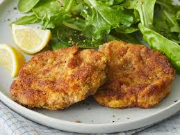
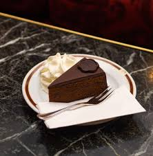
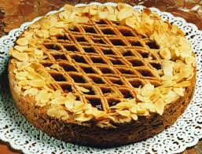
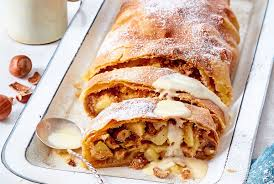

Teilstücke von Viel oder Schweinefleisch, die mit Paniermehl umwickelt und dann in Butter gebraten werden. Ein klassisches österreichisches Rezept.
Eine Wiener Schokoladentorte, deren Wurzeln bis ins Jahr 1832 zurückreichen und die für Fürst Metternich von Wien hergestellt wurde.
Ein Mürbeteigkuchen, bei dem Nüsse und Fruchtfüllungen für den Geschmack sorgen.
Ein geschichtetes Gebäck mit Apfelstücken und Füllung, oft mit Puderzucker und Nüssen bestreut.
